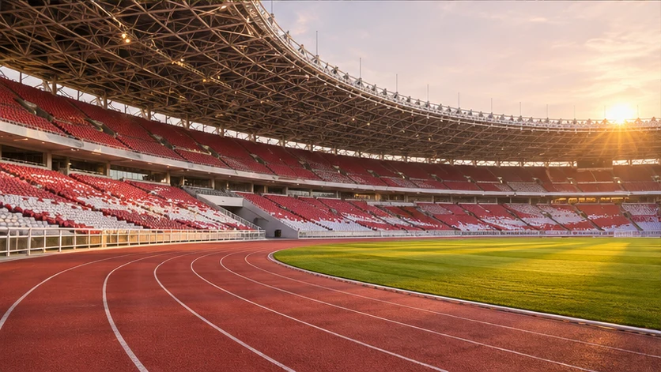

Pilih arena.
Filter berdasarkan kegiatan. Buka detail untuk melihat orientasi, ketentuan, dan jalur reservasi.
6 venue

Sepak bola · StadionStadion Utama

Bulu tangkis · Basket · VoliIstora Senayan

Renang · Olahraga airStadion Akuatik
Atletik · Sepak bolaStadion Madya
Tenis · OutdoorTennis Center Court
Ruang terbuka · TamanHutan Kota
Direktori ini menampilkan enam venue pilihan. Lapangan dan fasilitas lain dapat ditambahkan ke direktori.
Coba reservasi venue ↗